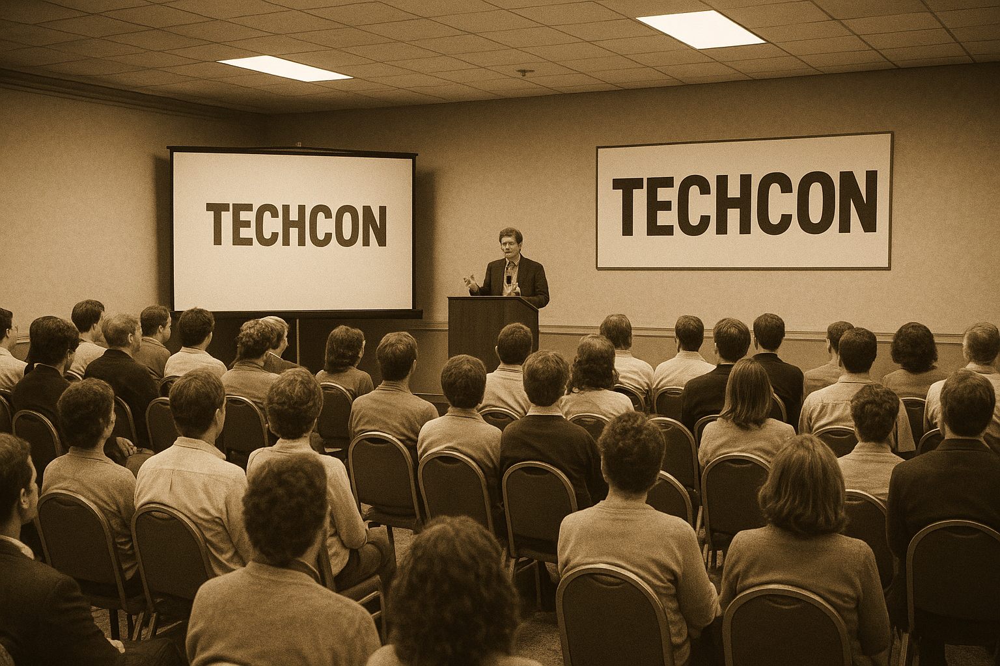

TechCon began in 2005 as a small gathering of tech enthusiasts and has since grown
into one of the largest global conferences for innovators, developers, and industry leaders.
Over the years, it has become a hub for showcasing emerging technologies, groundbreaking ideas,
and collaborative opportunities.

Figure 1: Historical photo of early TechCon events
The conference has evolved from basic tech talks to multi-track sessions featuring AI, cloud computing,
cybersecurity, robotics, and more, shaping the future of technology year after year.
Our Mission
TechCon aims to inspire innovation, empower young talent, and bring together global experts to solve
real-world technological challenges. The conference focuses on collaboration, learning, and exploring
the limitless possibilities of modern technology.
Figure 2: Icon representing innovation
Each year, we strive to create an environment where creativity, knowledge-sharing, and professional
growth flourish.
Past Speakers
Jane Doe
Figure 3: Photo of Jane Doe
Jane Doe is a leading AI researcher known for her pioneering work in machine learning ethics.
She has contributed to several global initiatives promoting responsible AI development.
John Smith
Figure 4: Photo of John Smith
John Smith is a cloud computing architect with over 20 years of experience. His insights on scalable
infrastructure have shaped modern enterprise cloud solutions.
Amina Khan
Figure 5: Photo of Amina Khan
Amina Khan is a cybersecurity expert who has led initiatives for digital safety and online privacy,
helping companies strengthen their security systems.